Weather fights too
Fog seas in the northern valleys, rain on the strait, dust walls on a live wind field and ground blizzards in the third winter. None of it is a skybox.
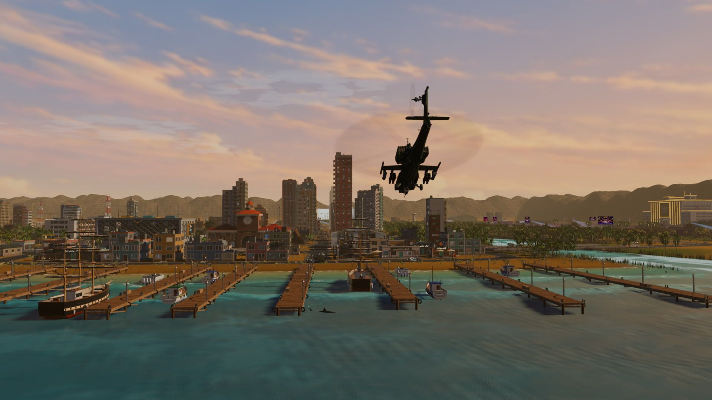
One defected battleship. One stolen gunship. A helicopter war in the Desert Strike tradition, crossed with a base you found, feed and defend, all flown from one cockpit.
Ninety seconds of the current build. Every shot was flown and filmed in the game, with the game's own sound under the score.
A 1990s that never was. In the Republic of Parsava, a fictional country on the Gulf, the oil, the radars and the television all answer to Marshal Rashid al-Ghazi, a foreign-born strongman ruling Persian soil.
When his Guard fired on the protest squares, the crew of one battleship stopped taking orders. They took the Simorgh, her gunship and every mixtape aboard, and went to war with the regime that trained them. The state news calls them pirates. The villages cheer when they fly over.
Each campaign is one continuous, hand-authored theater. The war carries over: what you take in spring is who fights beside you in winter.
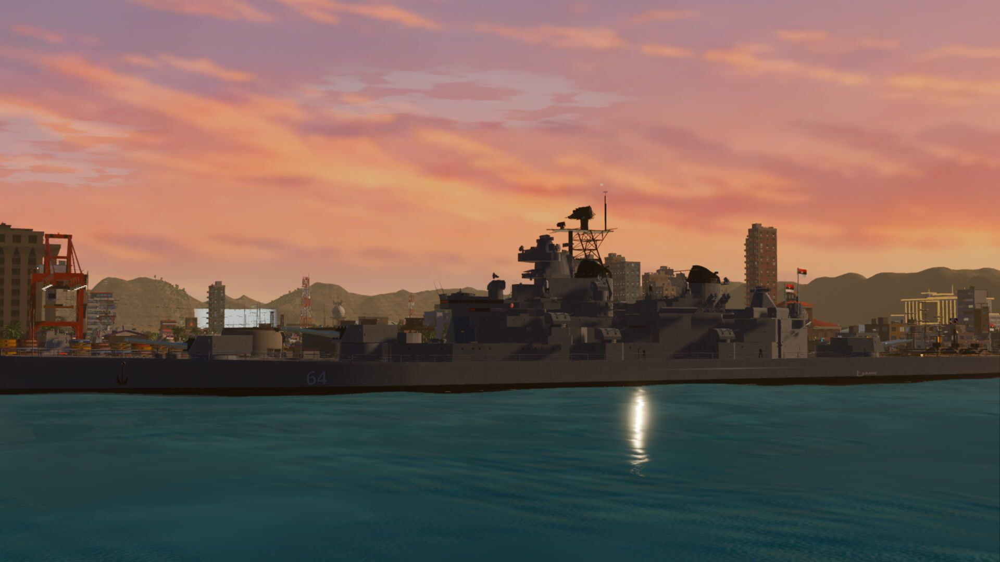
The mutiny in the Gulf of Simorgh. Restore a ruined regime installation into your beachhead, then take the Parsava coast off the war book, one operation at a time.
Read the campaign →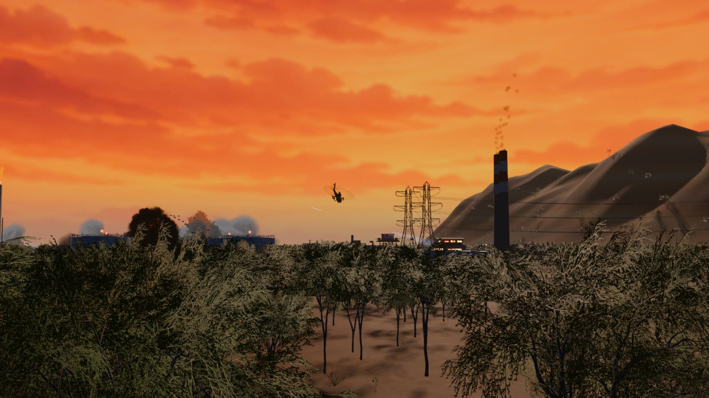
The Marshal closes the strait. Free the ports one by one, out-build his fortress across the water, and get the enriched material out without turning the coast to glass.
Read the campaign →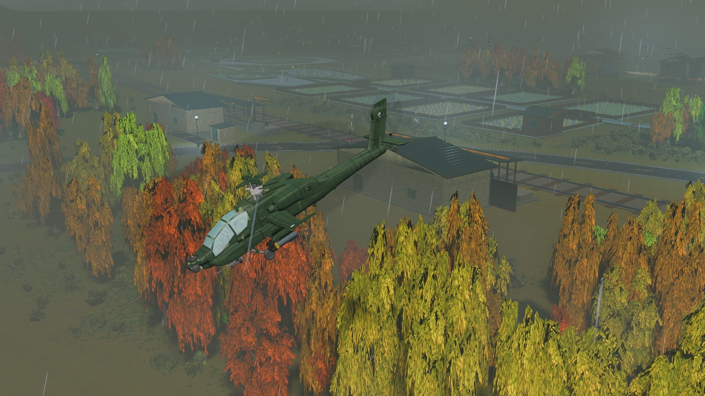
The proxy war becomes a world war on the Caspian coast. Slip into the regime's five-pad base under stealth, steal its prototype systems, and stop a sixteen-car armored train.
Read the campaign →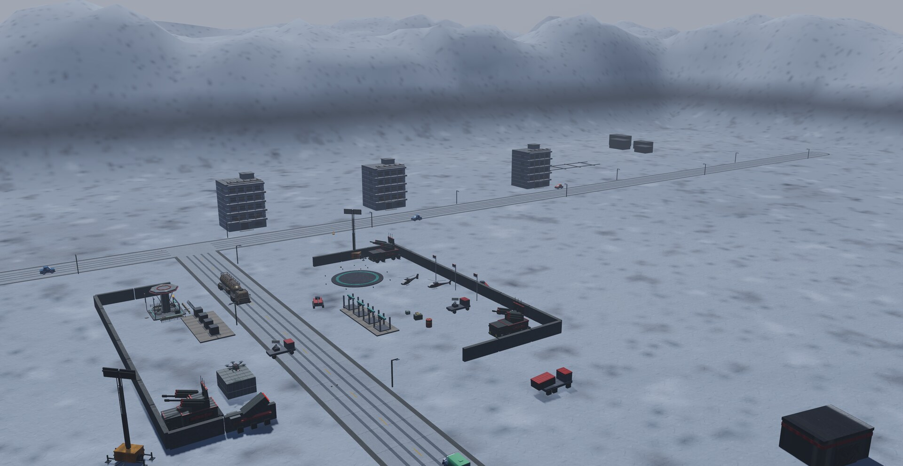
The movement is the government now. Four contingents, one wall, and a war machine that fights on without its master. Twenty-two minutes on the silo clock.
Read the campaign →Desert Strike's cockpit welded to a Command & Conquer economy, and the helicopter is the only cursor you get.
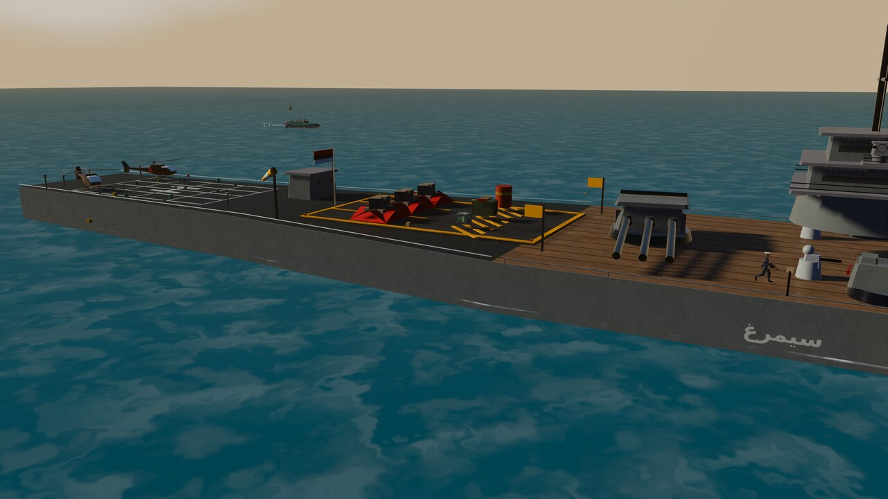
There is no build menu. Ferry the work crew, sling the block tarps off the Simorgh's cargo yard, and watch the building physically go up. Once it stands, its production runs itself.
Every wall on the beachhead was flown in under your rotors.
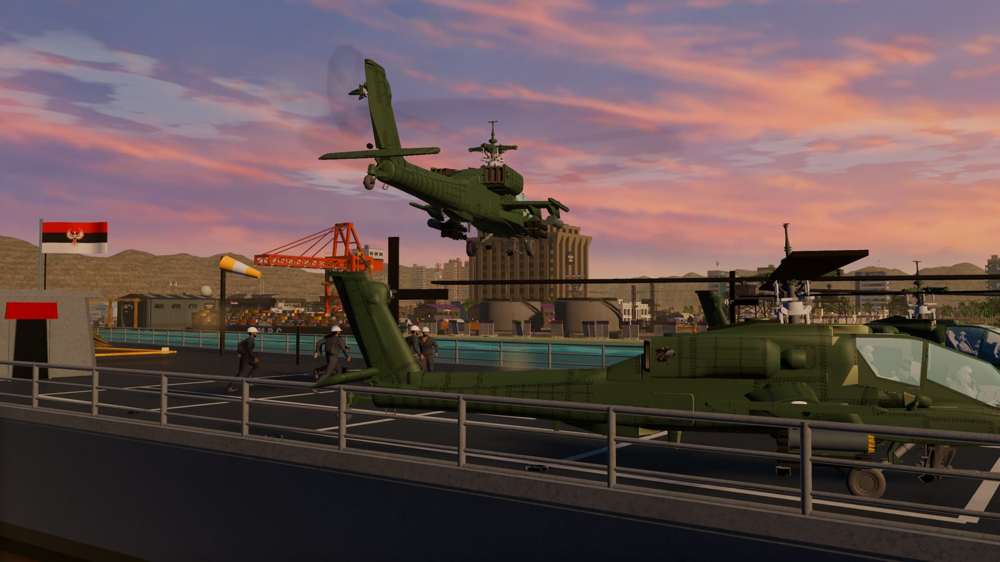
The ground war is autonomous. Barracks replace their own dead, war factories roll their own columns, and both armies march on authored roads. You change the war by what you carry, what you destroy and who you bring home.
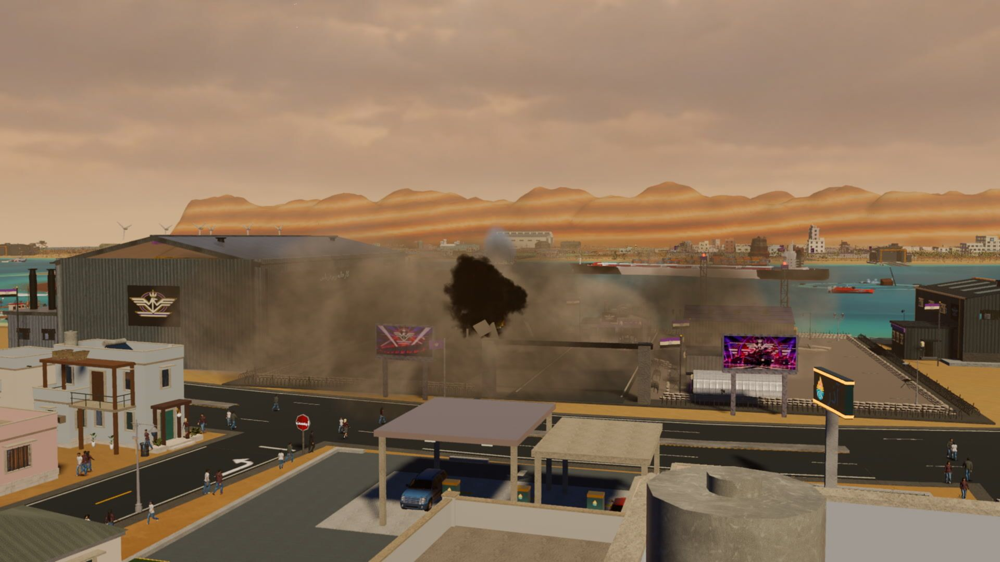
Every building, bridge, ship and tower comes apart for real, and the rubble stays where it fell. Drop the only causeway across the strait and you live with the map you made.
Fog seas in the northern valleys, rain on the strait, dust walls on a live wind field and ground blizzards in the third winter. None of it is a skybox.
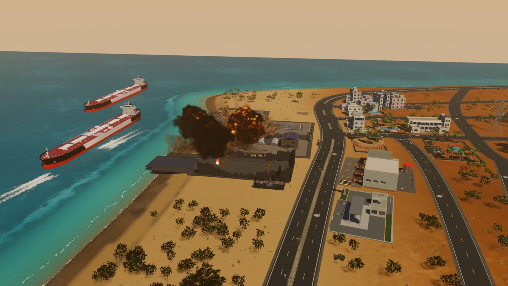
The coastTankers keep their lanes while the shore burns. The sea floats the fleet, stops bullets, and obeys the tide.
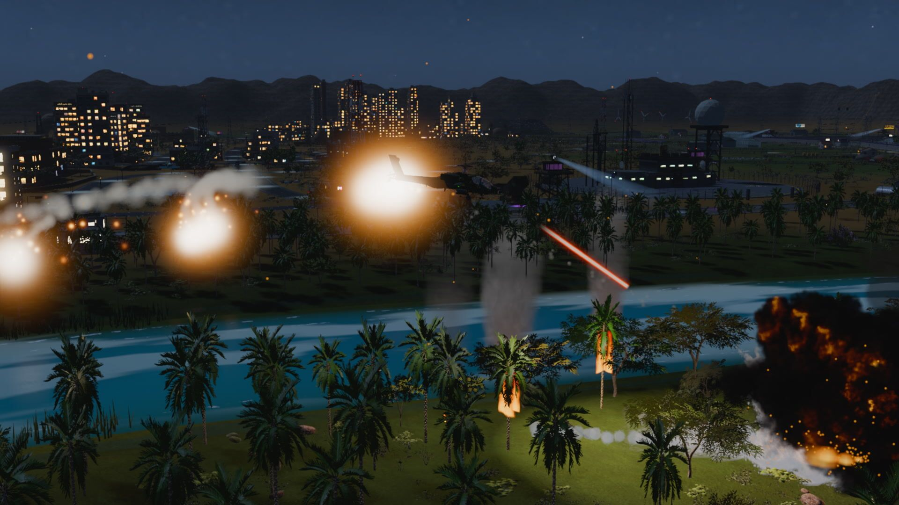
Day and nightTracer, rocket trails and burning palms over a river town at night, with searchlights sweeping for you.
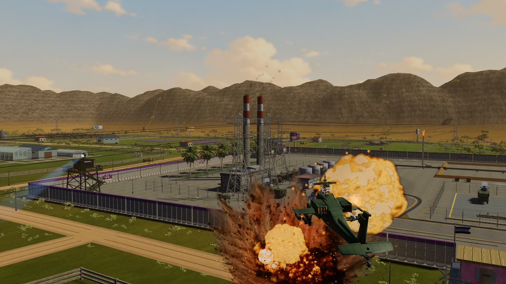
Oil countryPut a Hellfire into the tank farm and the fire runs tank to tank. Torched derricks burn for hours.
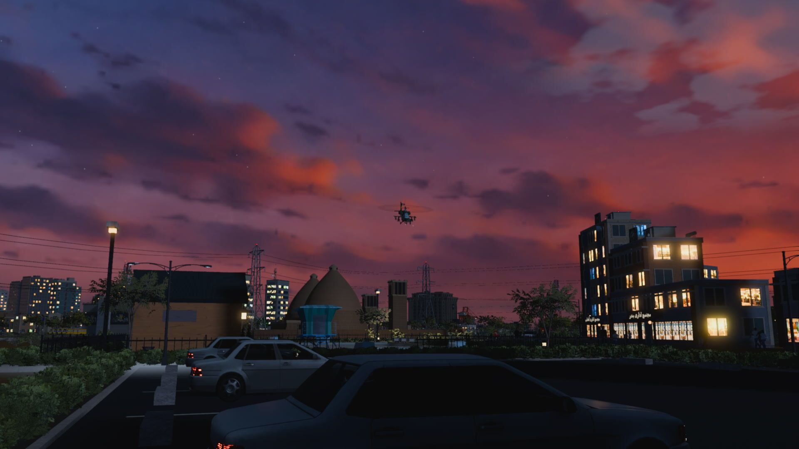
TownsLit windows and parked cars at dusk. Every town was a living place before the war reached it, and traffic still runs its real roads.
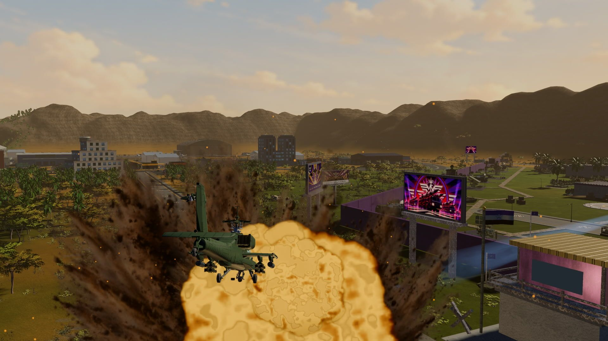
The gun runHydras for the soft targets, the chin gun for the infantry, Hellfires for the armor and the SAMs.
Every picture here is a frame from the current build.
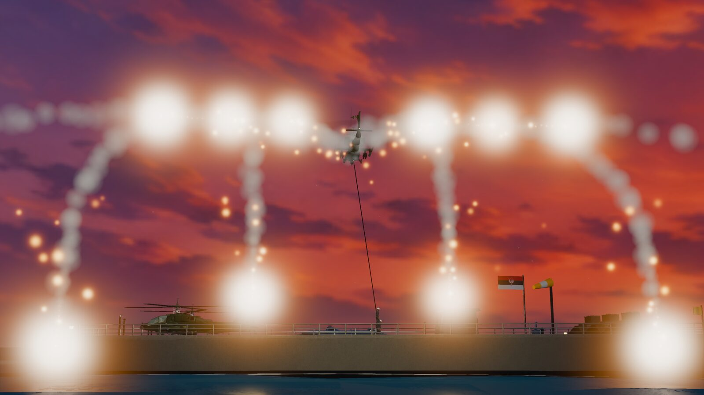
CountermeasuresCountermeasures now burn like the real thing: white-hot flares that light up the deck below, each one dragging its own smoke trail down toward the sea.
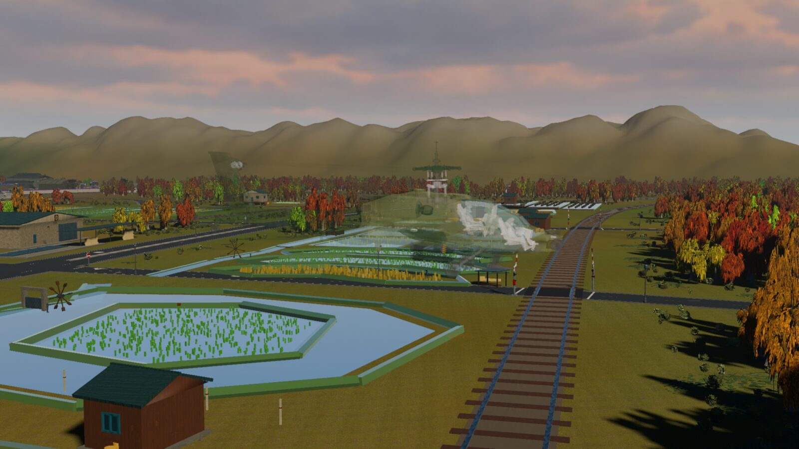
Operation ShahinIn Operation Shahin the squadron steals the regime's own prototypes, including a stealth system that fades the gunship to a ripple in the air.
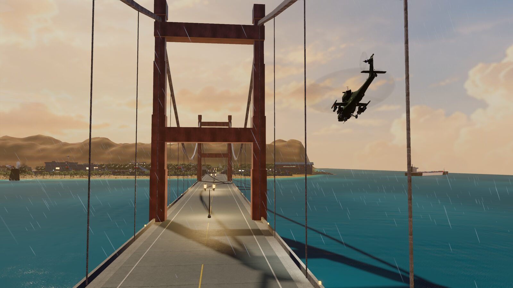
WeatherRain now falls at raindrop scale, streaking past the bridge cables and across the open water of the strait.
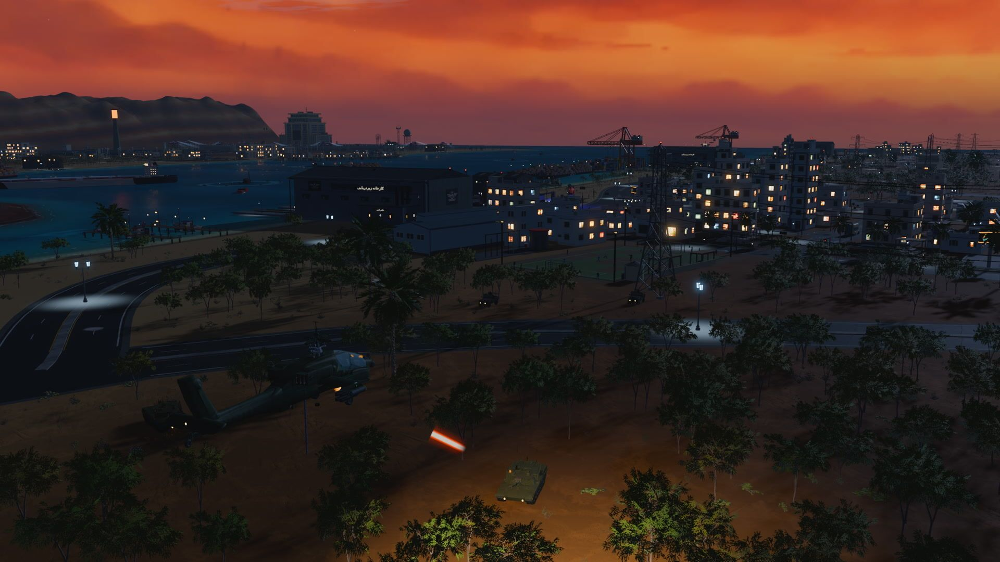
Operation TangehBring the datacenter online and the gunship's laser picks incoming hunter drones out of the dusk on its own.
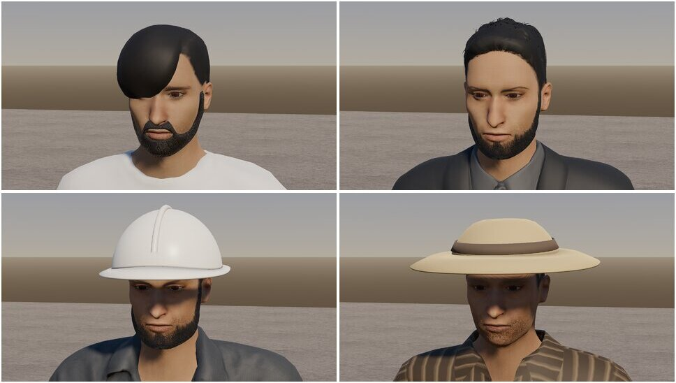
PeopleA new generation of characters with real beards, moustaches and working headgear: the dock hands, drivers and crews of the Parsava coast.
Four campaigns and one continuous war, with every wall in it flown in under your rotors. Start with the free Operation Tondbad demo, and the war grows with every update.